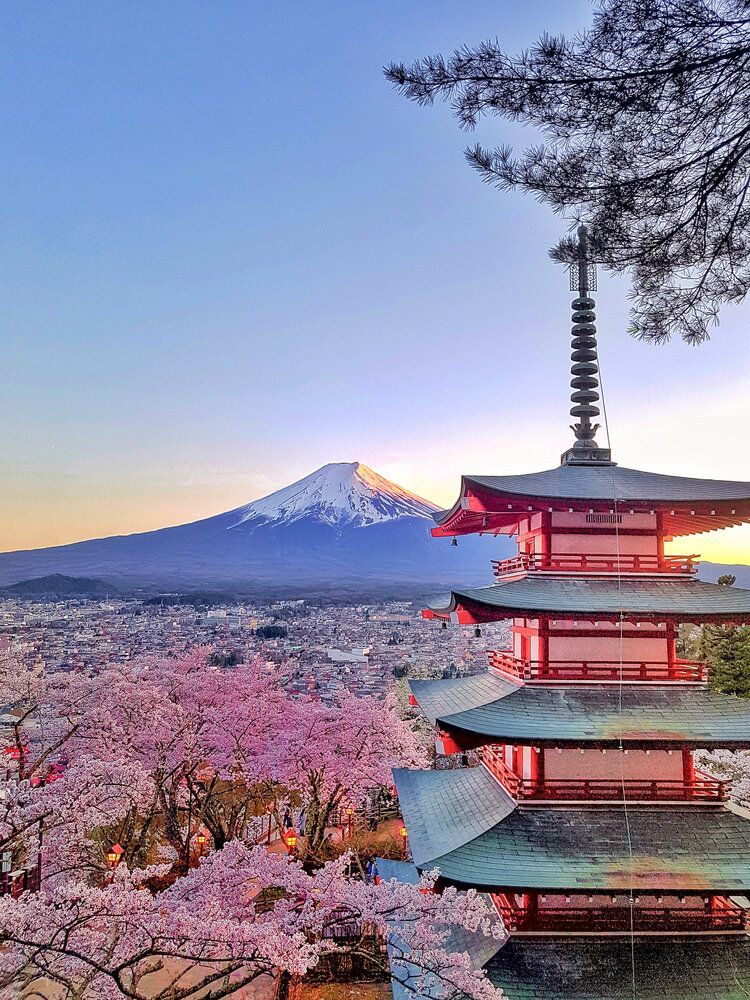

Sou uma pessoa dedicada e adoro aprender sobre tudo! sempre tento ser a melhor em tudo oque me proponho a fazer
Nome: Rebecca Sarah Duarte Paulucci
Turma: 2º Ano I - Germinare TECH
Lugares que tenho vontade de conhecer


Tenho vontade de conhecer o mundo inteiro, adoro conhecer culturas novas, e conhecer lugares totalmente diferentes dos que eu estou habituada, mas esses tem um espaço especial no meu coração
O lugar dos meus sonhos
Nome do lugar: Japão
Por que quero conhecer esse lugar?
Eu quero muito ir ao japão por causa da culinária e da cultura, os costumes e as paisagens japoneses me chamam muita atenção, e pretendo morar lá um dia, principalmente pela segurança e a cultura.
Curiosidades sobre esse lugar
- Existe aproximadamente uma máquina de venda para cada 23 pessoas.
- No Japão, chegar no horário é chegar 5 ou 10 minutos antes. Se um trem atrasa mais de 1 minuto, ele é considerado oficialmente atrasado.
- Em estações extremamente movimentadas de Tóquio, como Shinjuku, existem funcionários uniformizados (com luvas brancas!) cujo trabalho é literalmente empurrar as pessoas para dentro dos vagões durante o horário de pico.
Por que a Dapdhne?
- Resolve problemas complexos com o que tem em mãos.
- Sabe ler as pessoas e mediar conflitos no grupo
- É a ponte que conecta diferentes talentos da equipe..